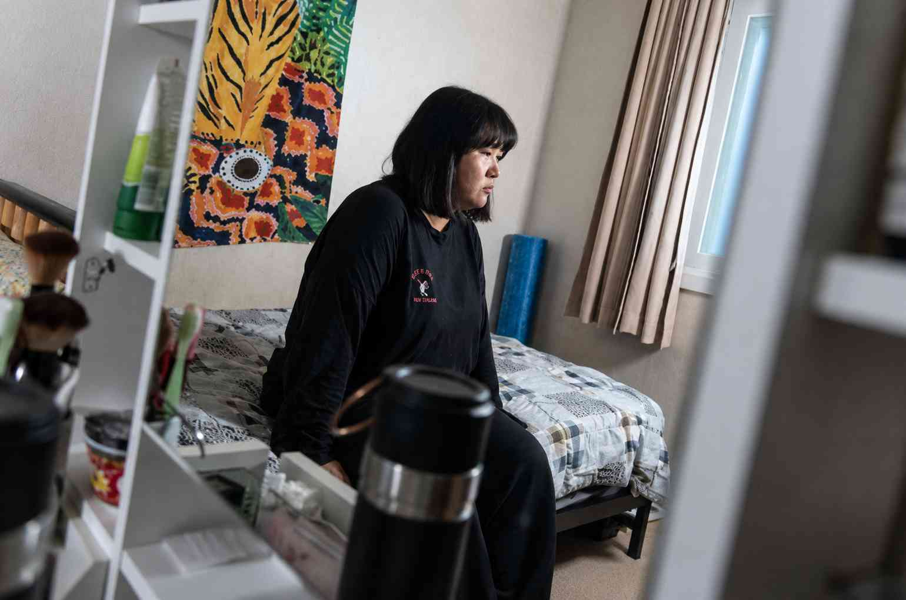

Corea del Sur tiene la tasa más baja de natalidad del mundo, y continúa en descenso, batiendo sus propios e increíblemente bajos récords impuestos año tras año. Las cifras divulgadas este miércoles registran que cayó otro 8% en 2023 a 0,72.Eso representa el número de hijos que una mujer esperaría tener en el curso de su vida. Para que una población logre mantenerse estable, el número debería ser 2,1.Si esta tendencia continúa, se estima que la población surcoreana quedaría reducida a la mitad para el año 2100.
En 50 años, el número de personas en edad de trabajar bajará a la mitad, el grupo elegible para prestar el servicio militar obligatorio se reducirá un 58%, y casi la mitad de la población tendrá más de 65 años. Es tan mal augurio para la economía del país, el fondo de pensiones y la seguridad que los políticos lo han declarado una “emergencia nacional”. Durante casi 20 años, sucesivos gobiernos han designado enormes sumas de dinero al problema; el equivalente a US$286.000 millones para ser exactos. Las parejas que tienen hijos son colmadas con ayudas financieras, desde sumas mensuales hasta subsidios de vivienda y taxis gratis. Las cuentas de hospital e incluso los tratamientos in vitro están cubiertos, aunque solo para las personas que están casadas. Pero esos incentivos financieros no han funcionado, lo que ha llevado a los políticos a buscar soluciones más “creativas”, como contratar niñeras del sudeste asiático pagándoles por debajo del salario mínimo, o eximir a los hombres del servicio militar si tienen tres hijos antes de los 30 años. Como era de esperar, los legisladores han sido acusados de no escuchar a los jóvenes, particularmente a las mujeres, sobre sus necesidades. De manera que, a lo largo del último año, hemos viajado por el país hablando con mujeres para entender sus razones para no tener hijos.
“Un ciclo perpetuo de trabajo”
Yejin prefirió en cambio enfocarse en su carrera en televisión que, sostiene, no le deja el tiempo suficiente para criar un hijo. Las jornadas laborales de los coreanos son notoriamente largas.Yejin tiene un empleo tradicional de 9 a 18 (el equivalente coreano del 9 a 17 en otros países), pero señala que en realidad no deja el trabajo antes de las 20 y además hay que hacer horas extras. Una vez en casa, apenas tiene tiempo para limpiar o hacer ejercicio antes de acostarse.“Amo mi trabajo, me llena de mucha satisfacción”, asegura. “Pero el trabajo en Corea es duro, estás atrapada en un ciclo perpetuo de trabajo”.Añade que también está la presión de estudiar en su tiempo libre, para volverse mejor en el trabajo: “Hay una mentalidad entre coreanos de que si no estás trabajando continuamente en mejorarte, vas a quedar rezagada y serás un fracaso. Ese temor nos hace trabajar el doble”.

“Algunos fines de semana voy a que me pongan una intravenosa, tan sólo para tener suficiente energía para regresar al trabajo el lunes”, dice casualmente, como si eso fuera una actividad normal del fin de semana.También comparte el mismo temor de cada mujer con quien hablé; que si se tomara la baja para tener un hijo, posiblemente no podría regresar al trabajo.“Hay una presión implícita de las compañías que implica que cuando tenemos hijos, debemos abandonar nuestros trabajos”, dice.Ha visto cómo eso le ha sucedido a su hermana y a sus dos presentadoras de noticias favoritas.